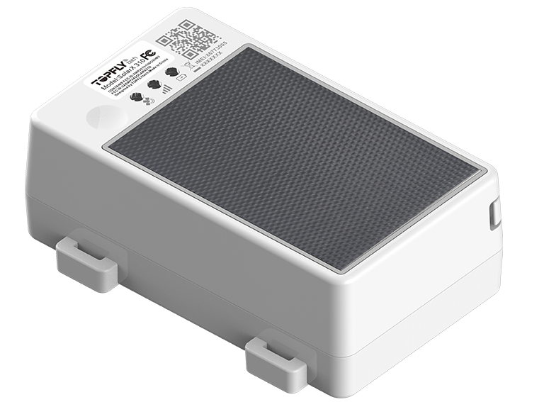
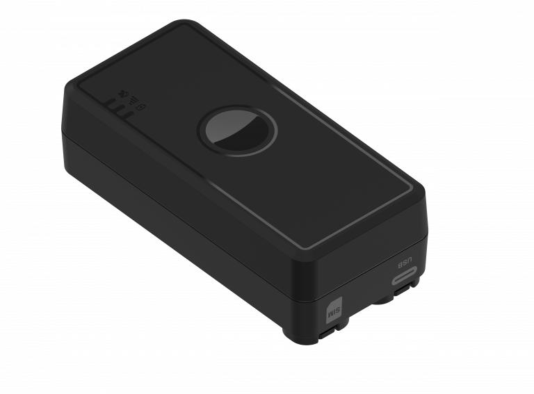
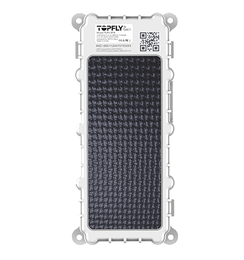
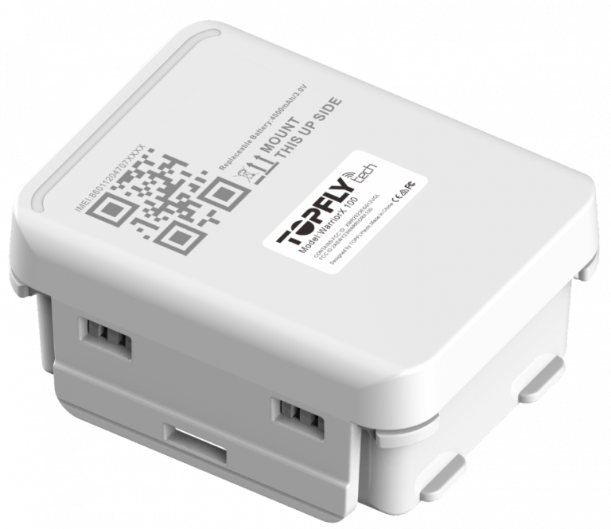
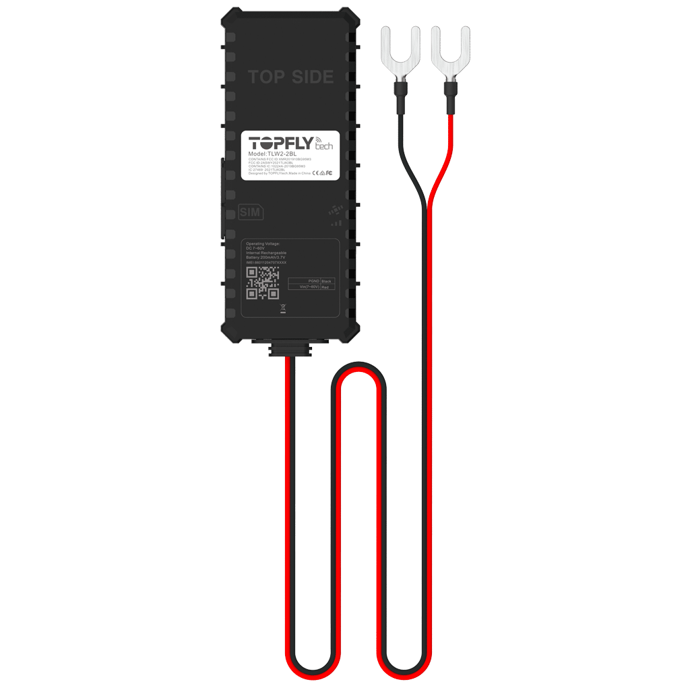
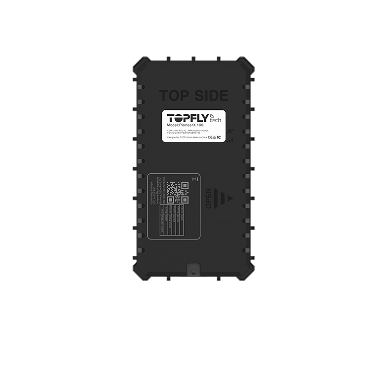

Topflytech’s SolarX series, enhanced with BLE temperature/humidity sensors, door open detection, and optional wireless relay control, gives you a powerful, low-maintenance solution designed for real-world cold chain complexity.

It’s suitable for tracking and monitoring assets such as containers, trailers, trucks, etc.
It’s suitable for tracking and monitoring assets such as containers, trailers, trucks, etc.

Compact 4G GPS tracker designed for vehicles and logistics operations — delivering reliable real-time tracking and smart alerts.

It’s suitable for tracking and monitoring assets such as containers, trailers, trucks, etc.
It’s suitable for tracking and monitoring assets such as containers, trailers, trucks, etc.

Rugged 4G AI-powered tracker built for heavy-duty vehicles, offering advanced diagnostics, driver behavior analytics, and multi-sensor support.

LW2-2BL is the basic hardwired tracker for tracking powered assets and vehicles, with ignition detection and output for relay.

PioneerX 100 is an entry level hardwired tracker that has I/Os that could be used for ignition detection, relay, buzzer, SOS button, or your own accessories.

PioneerX 101 is an entry to medium level hardwired tracker that has I/Os that could be used for ignition detection, relay, buzzer, SOS button, or other accessories.